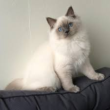

Ragdolls
|  |
Det har ett medelstort huvud men pälsen gör att ansiktet ser större ut. Öronen är också medelstora och sitter på sidorna av huvudet, så att de förlänger det trekantiga ansiktet. Benen är långa och starka. Hakan bör vara välutvecklad och de ovala ögonen bör vara blå. Ragdoll finns i färgmönster. En ragdoll har ett "maskat" mönster där den ljusare färgen kontrasterar mot den mörkare på ögon, öron, ben och svans. Den tvåfärgade ragdollen har också mörka toppar men har ett synligt upp och nedvänt V i pannan, medan magen, benen och kragen är vita. Ragdollen med mitted mönster har också färgade toppar men i detta färgmönster är tassarna och hakan vita. Pälsens längd kan variera från halvlång till lång. Den är mjuk, plyschaktig och silkeslen. |